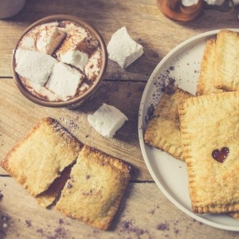
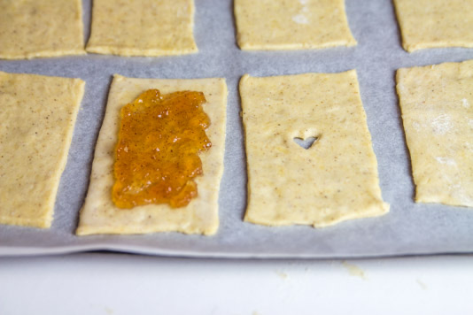
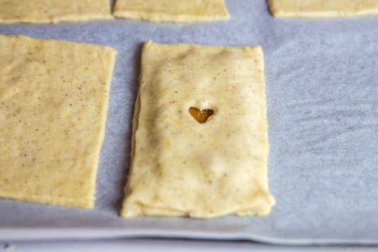
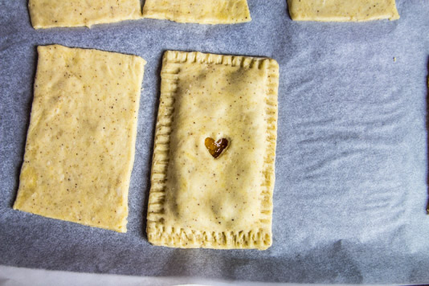
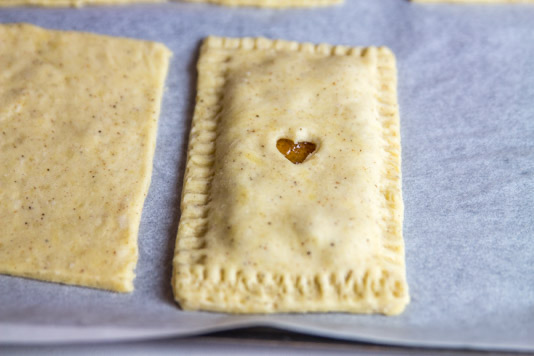

Pop-tarts

Aujourd’hui je vous retrouve avec une recette que je voulais faire depuis très longtemps car j’en raffole ; il s’agit de la recette des pop-Tarts fourrées avec une délicieuse confiture maison. Des pop quoi ? Des pops-Tarts !! Je me doute que tout le monde ne sait pas ce que c’est alors je vous dois bien une petite explication…. 🙂 Les Pops-Tarts c’est vraiment tout simple et vraiment délicieux (vraiment !!). Il s’agit d’une pâtisserie (appelée aussi grillardise, pâtisserie pour grille pain ou tartelette pour grille pain) de forme rectangulaire est plutôt plate constituée de deux couches de pâte brisée qui renferment le plus souvent de la confiture. Il y en a vraiment pour tous les goûts !! Si tout le monde dans la famille n’aime pas la même confiture ce n’est pas un problème, vous pouvez en faire à ce que vous voulez et autant que vous voulez (et pourquoi pas y mettre aussi de la pâte à tartiner^^). Vous pouvez, en fin de cuisson, les saupoudrer de sucre glace ou ajouter une couche de glaçage royale colorée (ou non) pour le côté fun et déco. Elles se mangent chaudes, tièdes ou froides ça n’a aucune importance (moi je les aime tièdes ou froides de la veille) et je vous assure que c’est le goûter parfait pour les enfants mais aussi pour les parents car c’est vraiment très simple et très rapide à faire. Pour tout vous dire, c’est la compagnie « Kellogg’s » qui à crée les Pop-Tarts et il s’agit d’une de leur plus grosse vente (plus de deux milliards sont vendues chaque année). Hélas ce produit n’est pas commercialisé en France et finalement ce n’est pas plus mal car lorsque c’est fait maison c’est clairement encore meilleur (autant gustativement que nutritionnellement parlant) alors foncez !
La garniture des pop-Tarts que je vous présente aujourd’hui est une délicieuse confiture faite maison à la pomme et à la cannelle (la recette est d’ailleurs juste ICI 😉 ) et comme vous pouvez le voir, j’ai choisi de ne pas mettre de glaçage royal sur le dessus mais tout simplement de les badigeonner avec un peu de beurre et de cassonade car c’était selon moi le mariage parfait avec ma confiture. Le petit plus, (mais vous n’êtes pas obligé de me suivre) est que ma pâte brisée contient elle aussi de la cannelle pour encore plus de goût et surtout de gourmandise(on en raffole à la maison) !
Je vous laisse découvrir cette petite recette qui je l’espère vous plaira autant qu’à moi !
Ingrédients
- Pour la pâte brisée
- Beurre en morceaux - 125g
- Farine T45 - 250g
- Sel - 1 càc
- Cassonade - 40g
- Eau froide - 125ml
- Cannelle - 3càc
- Confiture maison pomme cannelle pour moi
- Beurre - environ 20g
- Cassonade
Instructions
- Pour la pâte brisée maison (sinon vous pouvez en acheter directement dans le commerce) : Si vous ne souhaitez pas mettre de cannelle dans la recette libre à vous de la supprimer et de faire une pâte brisée nature.
- Préparation de la pâte brisée(si vous l'achetez dans le commerce rendez-vous à l'étape suivante pour garnir les pop-tarts) : - Dans un saladier, mélanger la farine, la cannelle, le sel et la cassonade. - Ajouter le beurre coupé en morceaux - Bien l'incorporer (avec les mains ou avec la feuille de votre robot) au mélange farine-sucre - Verser l'eau petit à petit Attention la quantité d'eau peut varier selon les ingrédients utilisés etc alors verser bien petit à petit. Il faut une pâte non collante et homogène Si la pâte est trop collante rajouter un peu de farine - Filmer la pâte et la placer au frais pendant 1 heure (ou plus si vous pouvez)
- Montage des pop-tarts : - Au bout d'une heure abaissez la pâte (penser à fariner votre plan de travail pour éviter qu'elle colle au plan de travail) - A l’aide d’un emporte pièce découper des rectangles (les miens font 8*12cm) - Préchauffer le four à 180° - Déposer au centre de la moitié des rectangles formés de la confiture (en veillant à laisser un espace suffisant sur les rebords pour venir refermer la pop-tart)
- - A l’aide d’un pinceau badigeonner les bords d’un peu d’eau - Recouvrir chaque rectangle contenant de la confiture par un autre rectangle de pâte (si comme moi vous avez un petit emporte-pièce, vous pouvez, avant de refermer faire une forme sur les rectangles de pâte qui refermeront les pop-tarts)
- - Bien sceller les bords en vous aidant d’une fourchette
- - Pour la présentation de ces pop-tarts, j’ai utilisé un emporte-pièce en forme de cœur pour faire une ouverture sur le dessus de la pop-tart et lui permettre de « respirer ». Si vous n’en avez pas, faites une petite entaille à l’aide d’un couteau sur le dessus (ça évitera à la pop-tart d’exploser dans le four !!) - Faire fondre 15/20g de beurre et badigeonner les pop-tarts. - Saupoudrez-les de cassonade et enfourner pendant 25 minutes (jusqu’à ce qu’elles soient dorées). Pensez à vérifier la cuisson car d'un four à l'autre la cuisson peut changer.. - Déguster froid, tiède ou chaud !




Les tips de la communauté
Recette adorée pour créer des pop-tarts maison. Les testeurs impressionnés de pouvoir reproduire ce produit commercial. Vidéo très appréciée avec l'effet de fumée du chocolat chaud. Possibilités infinies de garnitures.
Astuces
- La fumée dans les photos vient simplement du chocolat chaud versé, c'est une vidéo
- Épaisseur de pâte idéale : environ 2-3 mm à l'abaisse
- Possibilités infinies de garniturage selon les goûts
- Recette simple et rapide à réaliser
Variantes suggérées
- Utiliser différentes confitures : confiture de pomme-cannelle, mûres, abricot-vanille, etc.
Ajustements signalés
- que ce soit environ sur 2-3 mm 🙂 Bonne cuisine et bonne fin de dimanche!!